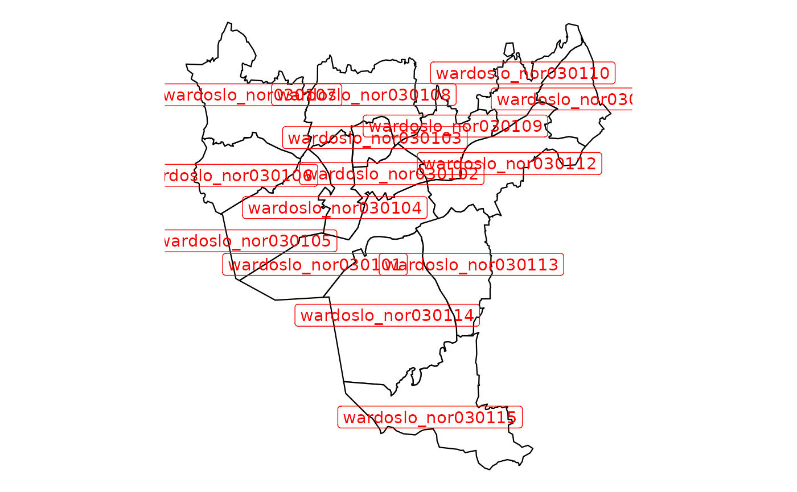

Map of Oslo wards (bydeler) in data.table format
Source:R/data_oslo_ward.R
oslo_ward_map_bxxxx_default_dt.RdWe conveniently package map datasets for Oslo wards (bydeler) (taken from Oslo municipality) that can be used in ggplot2 without needing any geo libraries. This data is licensed under Creative Commons BY 4.0 (CC BY 4.0).
oslo_ward_map_b2024_default_dt
oslo_ward_map_b2020_default_dt
oslo_ward_position_geolabels_b2024_default_dt
oslo_ward_position_geolabels_b2020_default_dtFormat
- long
Location code.
- lat
Location name.
- order
The order that this line should be plotted in.
- group
Needs to be used as 'group' aesthetic in ggplot2.
- location_code
Location code (ward code).
An object of class data.table (inherits from data.frame) with 1372 rows and 5 columns.
An object of class data.table (inherits from data.frame) with 15 rows and 3 columns.
An object of class data.table (inherits from data.frame) with 15 rows and 3 columns.
Details
Borders provided for 2024, 2020.
Examples
# 2024 borders
library(ggplot2)
q <- ggplot(mapping = aes(x = long, y = lat))
q <- q + geom_polygon(
data = csmaps::oslo_ward_map_b2024_default_dt,
mapping = aes(group = group, fill = location_code),
color = "black",
fill = "white",
linewidth = 0.4
)
q <- q + geom_label(
data = csmaps::oslo_ward_position_geolabels_b2024_default_dt,
mapping = aes(label = location_code),
color = "red"
)
q <- q + theme_void()
q <- q + coord_quickmap()
q

# 2020 borders
library(ggplot2)
q <- ggplot(mapping = aes(x = long, y = lat))
q <- q + geom_polygon(
data = csmaps::oslo_ward_map_b2020_default_dt,
mapping = aes(group = group, fill = location_code),
color = "black",
fill = "white",
linewidth = 0.4
)
q <- q + geom_label(
data = csmaps::oslo_ward_position_geolabels_b2020_default_dt,
mapping = aes(label = location_code),
color = "red"
)
q <- q + theme_void()
q <- q + coord_quickmap()
q